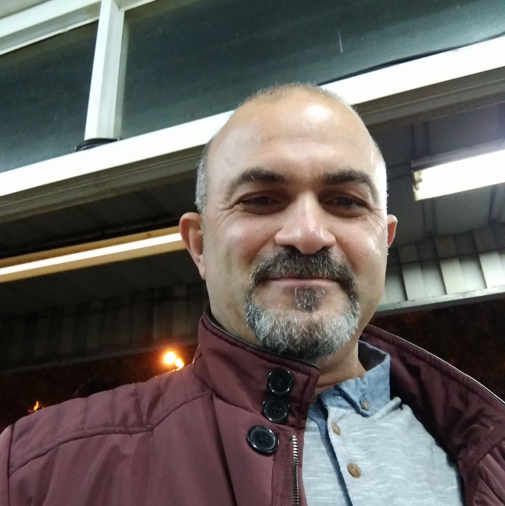
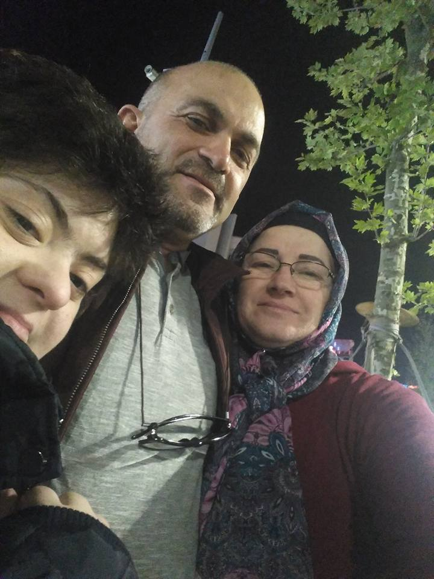
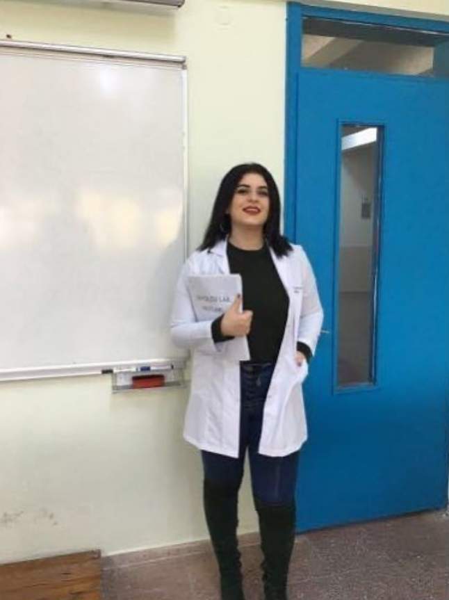

Abdulmecit Kum 01.01.1965 tarihinde Trabzon'da dunyaya gelmistir.Hayatini Trabzon'da surdurmustur.Babasini erken yasta kaybetmistir.Ayni mahallede yasadigi Hulya Aydin ile hayatini birlestirmistir.Hulya ve Abdulmecit'in ilk cocugu 1997 yilinda ikinci cocugu 1998 yilinda dunyaya gelmistir.Abdulmecit Zorlu tekstil firmasinda calisirken bazi talihsizliklerden dolayi isten cikarilinca 2009 yilinda gemiye cikmistir. 2009 yilindan bu zamana kadar gemicilik hayatini surdurmektedir.
Iletisim icin fotografa tiklayiniz.
Hulya Kum 03.04.1966 tarihinde Almanya/Langen Felruhid'de dunyaya gelmistir.Hayatina Almanya'da baslayan Hulya 10 yasinda iken ailesi ile birlikte Turkiye'ye yerlesmislerdir.Hulya Ticaret Meslek Lisesi'ni bitirmistir ve muhasebeci olarak mezun olmustur.Is hayatina doktorlar odasinda sekreter olarak baslamistir.1994 yilinda Abdulmecit ile hayatini birlestirip evlenmistir ve onunla iki cocugu olmustur.Ilk cocugunun down sendromlu dogmasi uzerine Hulya isi birakmis ve o zamandan beri ev hanimi olarak hayatina devam etmektedir.
Iletisim icin fotografa tiklayiniz.
Ezgi Kum 08.08.1997 tarihinde Trabzon'da dunyaya gelmistir.Hayatina down sendromlu olarak baslamistir.Ama hayatinin en buyuk sansi onu cok seven bir aileye sahip olmasiydi.Ezgi engellerine ragmen okul hayatina devam etmis ve basarili olmustur.Ailesinin destegiyle evde kendini bakacak kadar ev islerini ogrenmistir.Ezgi hala ailesiyle yasamaktadir.
Iletisim icin fotografa tiklayiniz.
Aysenur Kum 10.12.1998 tarihinde Trabzon'da dunyaya gelmistir.Anaokulu,ilkokulu ve ortaokulu Kaledibi I.o.o'da okumustur.Liseyi Akcaabat ozel ugur lisesinde okumustur.Karadeniz Teknik Universitesinde gemi insaati muhendisli ve su urunleri muhendisligi okumustur.Ancak okudugu bolumlere basta ilgisi olsa da sonrada ilgisini kaybetmistir.Hic bilmese de yazilim alanina yonelmek istemistir.Bunun uzerine Meta World'de Full Stack ogrencisi olmustur.
Iletisim icin fotografa tiklayiniz
